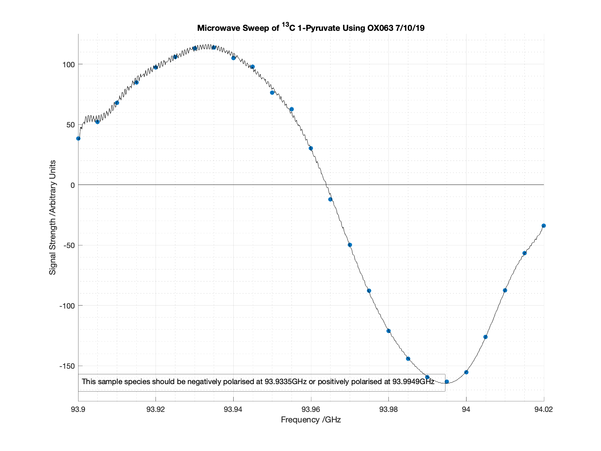

Graphing Microwave Sweep Data and Calculating Polarisation Frequencies
Contents
- Inputs
- Alternative Inputs for When x and y are not Available (Hypersense)
- Alternative Inputs for When x and y are not Available (Alpha System)
- Outputs
- Child Functions
- Checking if x and y are Valid
- Calling the User if There is Insufficient Data to Calculate the x and y Arrays
- Establishing the Dimensions of the Outputted Arrays
- Generating the Microwave Sweep Plot
- Notes
Inputs
x: is a column vector of the microwave frequencies sweeped
y: is an array of the signal for each microwave frequency sweeped. Each NMR peak is in a different column
titl: is the title of the microwave sweep plot and should be a character vector
peaknames: is a cell containing the names of each NMR peak
Alternative Inputs for When x and y are not Available (Hypersense)
sys: should be set to 'N' indicating the data originated from the Hypersense System
dat: is the file that contains the sweep data. It is the exported .dat file from the Hypersense
Alternative Inputs for When x and y are not Available (Alpha System)
sys: should be set to 'Y' indicating the data originated from the Alpha System
dat: is a cell that contains the data file(s). The first set of data should correspond to positive amplitudes, while the second set should correspond to negative amplitudes. If the amplitudes were calculated from MestReNova, dat should be a character vector (file name)
mic: can either be a .csv file containing the frequencies used in GHz or a column vector
inp: should be set to either 'A' or 'M' depending on if the amplitudes of the data were calculated using the AMARES algorithm in JMRUI ('A') or peak integration in MestReNova ('M')
coilnum: is the number of coils used to measure the data. This variable should always be set to '[]' unless inp has been set to 'M'.
field: is a cell containing the names of the peaks quanitified from the data. It should always be set to '[]' unless inp has been set to 'M', since the AMARES algorithm names the peaks.
Outputs
f: is an eight term fourier function fitted to the microwave data used to calculate the optimum polarisation frequencies
val1: is an array containing the optimum frequencies to positively polarise each species
val2: is an array containing the optimum frequencies to negatively polarise each species
Child Functions
checkYN: checks if an input is 'Y', 'y', 'N', 'n' or something else
alphaparse: parses data collected from the Alpha System and/or 300MHz magnet into the x and y arrays
isdatfile: checks if an input is a readible file
parsedat: parses data collected from the Hypersense into the x and y arrays
function [f,val1,val2] = sweepscatter(x,y,sys,dat,mic,inp,coilnum,field,titl,peaknames)
alg = 0;
if nargin < 10
peaknames = {'Data'};
end
Checking if x and y are Valid
If no x or y arrays are entered, or if they are invalid, such as if they have inconsistent dimensions, they must be calculated using the alternative inputs.
xlen = length(x);
ylen = length(y);
if nargin < 2
alg = 1;
elseif isempty(x) == 1
alg = 1;
elseif isempty(y) == 1
alg = 1;
elseif xlen ~= ylen
alg = 1;
end
Calling the User if There is Insufficient Data to Calculate the x and y Arrays
If the inputted x and y arrays are not valid, they will need to be calculated from the other inputs. If the other inputs are insufficient or invalid, the user will be called to enter the missing information.
if alg == 1 prompt = 'Was the data collected using the Alpha System (Y) or the Hypersense (N)? (Y/N): '; if nargin < 3 sys = input(prompt,'s'); end sysbool = checkYN(sys); while sysbool == 0 sys = input('Please enter Y if the data was collected using the Alpha System or N if the data was collected using the Hypersense (Y/N): ','s'); sysbool = checkYN(sys); end if sysbool == 1 if nargin >= 8 [x,y,peaknames] = alphaparse(mic,inp,'Y',dat,coilnum,field); elseif nargin >= 7 [x,y,peaknames] = alphaparse(mic,inp,'Y',dat,coilnum); elseif nargin >= 6 [x,y,peaknames] = alphaparse(mic,inp,'Y',dat); elseif nargin >= 5 [x,y,peaknames] = alphaparse(mic,[],'Y',dat); elseif nargin >= 4 [x,y,peaknames] = alphaparse([],[],'Y',dat); else [x,y,peaknames] = alphaparse([],[],'Y'); end elseif sysbool == 2 if nargin < 4 dat = input('Enter the .dat file containing the Microwave Sweep data: ','s'); end datbool = isdatfile(dat); while datbool == 0 dat = input('Error: Please enter a valid .dat file','s'); datbool = isdatfile(dat); end if datbool == 1 data = parsedat(dat); x = data(:,1); y = data(:,2); end end end
Establishing the Dimensions of the Outputted Arrays
There should be one value each to negatively and positively polarise each species in a sample. The val1 and val2 arrays are intialised here with the proper dimensions.
nums = length(peaknames);
val1 = zeros(nums,1);
val2 = zeros(nums,1);
Generating the Microwave Sweep Plot
The microwave sweep raw data is first plotted An eight term fourier function is then fit to the data, and it is solved over the domain of the frequencies. The absolute minimums and maxiumums of the fourier function are calculated, which are the values of val2 and val1_ respectively The fitted fourier function is then plotted over the data. If there are multiple data sets, they are plotted on top of each other in the same figure.
figure('Position',[0 0 800 600]) scatter(x,y(:,1),'filled') xlim([min(x) max(x)]) ylim([(1.1*min(y(:))) (1.1*max(y(:)))]) hold on f = fit(x,y(:,1),'fourier8'); plot(f,'k') rangeint = (max(x)-min(x))/1000; range = min(x):rangeint:max(x); yarray = f(range); ymin = min(yarray); ymax = max(yarray); inl = yarray == ymin; inh = yarray == ymax; val1(1) = range(inl); val2(1) = range(inh); val1disp = num2str(val1(1)); val2disp = num2str(val2(1)); vardisp = strcat('This sample species should be negatively polarised at', {' '}, val2disp, 'GHz or positively polarised at', {' '}, val1disp, 'GHz'); leny = length(y(1,:)); if leny > 1 for el = 2:leny scatter(x,y(:,el),'filled') f = fit(x,y(:,el),'fourier8'); plot(f,'k') rangeint = (max(x)-min(x))/1000; range = min(x):rangeint:max(x); yarray = f(range); ymin = min(yarray); ymax = max(yarray); inl = yarray == ymin; inh = yarray == ymax; val1(el) = range(inl); val2(el) = range(inh); val1disp = num2str(val1(el)); val2disp = num2str(val2(el)); vardisp = strcat('This sample species should be negatively polarised at', {' '}, val2disp, 'GHz or positively polarised at', {' '}, val1disp, 'GHz'); end end len = length(x); y1 = zeros(len,1); plot(x,y1,'k') grid on grid minor if leny == 1 dim = [.13 0 .3 .17]; annotation('textbox',dim,'String',vardisp,'FitBoxToText','on'); hLeg = legend(vardisp); set(hLeg,'visible','off') end xlabel('Frequency /GHz') ylabel('Signal Strength /Arbitrary Units') if nargin < 9 titl = 'Microwave Sweep'; elseif isempty(titl) == 1 titl = 'Microwave Sweep'; elseif string(class(titl)) ~= "char" titl = 'Microwave Sweep'; end title(titl) if length(peaknames) > 1 numlen = length(peaknames)*2; legpeaks = cell(numlen,1); for el = 1:length(peaknames) inda = el*2; ind = inda-1; legpeaks{ind} = peaknames{el}; end legend(legpeaks) end
end
f =
General model Fourier8:
f(x) =
a0 + a1*cos(x*w) + b1*sin(x*w) +
a2*cos(2*x*w) + b2*sin(2*x*w) + a3*cos(3*x*w) + b3*sin(3*x*w) +
a4*cos(4*x*w) + b4*sin(4*x*w) + a5*cos(5*x*w) + b5*sin(5*x*w) +
a6*cos(6*x*w) + b6*sin(6*x*w) + a7*cos(7*x*w) + b7*sin(7*x*w) +
a8*cos(8*x*w) + b8*sin(8*x*w)
Coefficients (with 95% confidence bounds):
a0 = -3.019e+13 (-1.103e+14, 4.987e+13)
a1 = 4.706e+13 (-7.82e+15, 7.914e+15)
b1 = -2.814e+13 (-1.312e+16, 1.307e+16)
a2 = -1.885e+13 (-2.017e+16, 2.013e+16)
b2 = 3.614e+13 (-1.044e+16, 1.051e+16)
a3 = -2.201e+12 (-2.026e+16, 2.026e+16)
b3 = -2.425e+13 (-1.886e+15, 1.838e+15)
a4 = 7.18e+12 (-9.778e+15, 9.793e+15)
b4 = 8.793e+12 (-7.997e+15, 8.015e+15)
a5 = -3.819e+12 (-1.471e+15, 1.463e+15)
b5 = -1.057e+12 (-5.318e+15, 5.316e+15)
a6 = 9.077e+11 (-5.793e+14, 5.811e+14)
b6 = -3.468e+11 (-1.516e+15, 1.515e+15)
a7 = -7.861e+10 (-2.47e+14, 2.469e+14)
b7 = 1.267e+11 (-1.529e+14, 1.532e+14)
a8 = -1.16e+09 (-2.385e+13, 2.384e+13)
b8 = -1.071e+10 (-2.602e+12, 2.581e+12)
w = 6.545 (3.579, 9.511)
val1 =
93.9949
val2 =
93.9335
Notes
The inputs used in the example are:
x: []
y: []
sys: 'N'
dat: '1Pyr_7_10_sweep.dat'
mic: []
inp: []
coilnum: []
field: []
titl: 'Microwave Sweep of ^{13}C 1-Pyruvate Using OX063 7/10/19'
The example was run by putting:
[f,val1,val2] = sweepscatter([],[],'N','1Pyr_7_10_sweep.dat',[],[],[],[], 'Microwave Sweep of ^{13}C 1-Pyruvate Using OX063 7/10/19')
into the command window